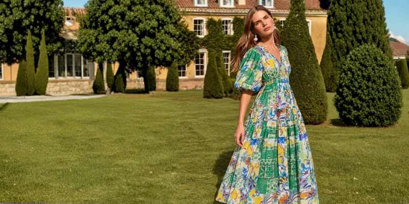

RT Edgar
Leading the client relationship across an integrated brand, customer experience and digital programme for a Melbourne real estate group founded in 1894.
Most recently Client Services Director at Antimony Studio in Melbourne, leading client relationships across property, fashion, food and wellness. Before that, I spent twelve years running my own premium menswear business, so I understand the decision to invest as well as the work of delivering it.
Leading the client relationship across an integrated brand, customer experience and digital programme for a Melbourne real estate group founded in 1894.

Developing the go-to-market strategy, advertising products and commercial partnerships that helped an independent editorial platform evolve into a digital publication.

Connecting retail and practitioner channel growth with research-led improvements to the customer experience.


Developing an international wholesale proposition, and opening stockist relationships in four new markets.

Building customer retention through lifecycle marketing, CRM and loyalty, as monthly email revenue grew fourfold.

Building a premium menswear business from the ground up, from brand and customer experience to commercial growth, production and digital development.